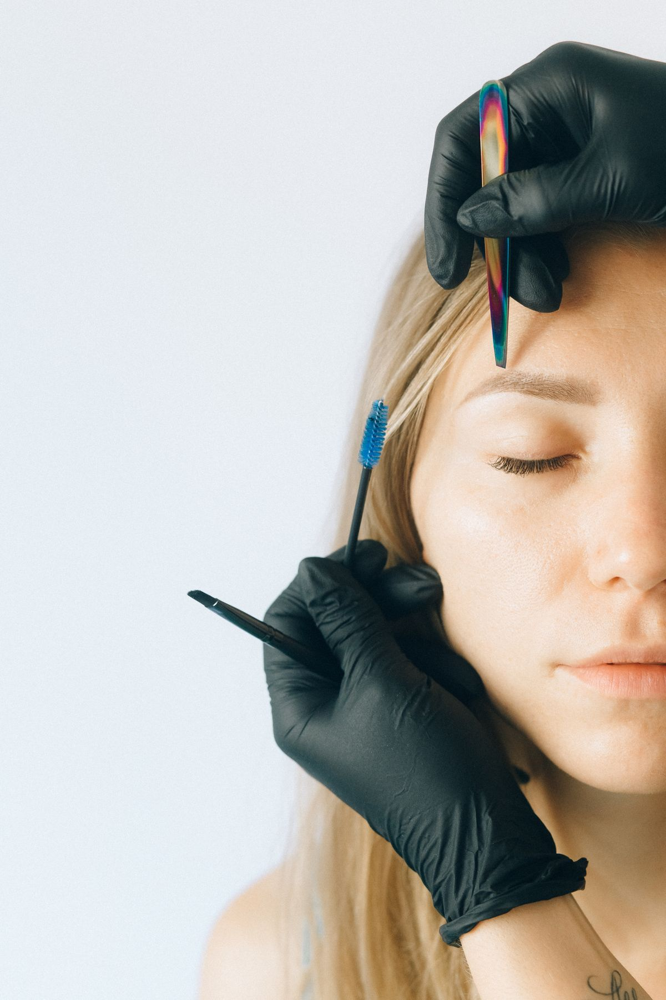
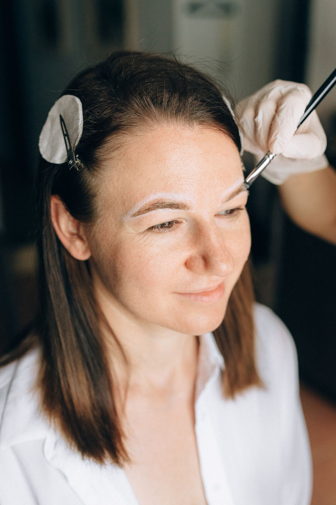

1 Set, 3 Years, $25 Holds Your Chair: How Long Your Ombre Brows Last, and What Fades Them
You are thinking about ombre brows, and one question sits at the top of your mind: how long will they last? You do not want to pay for brows that vanish in a season. This post gives you the honest life of a set of ombre brows, the touch-up that is part of the plan, and the habits that fade them fast, so your set lives its full life.
Ombre brows are semi-permanent. Most sets look their best for about 1 to 3 years before a color boost is wanted. Skin type moves you inside that range: oily skin tends to fade faster, dry skin tends to hold longer. A touch-up visit about 6 to 8 weeks after your first session is a normal part of the process. Sun, strong skin products on the brow area, and pools can fade the pigment faster.
What the video shows: The video answers the same question this post does: how long do powder brows last? Powder brows and ombre brows are close kin, both built with a machine laying soft layers of pigment. The video walks through the normal life of a set, year by year, and the things that shorten it, like oily skin and sun. It also covers aftercare: the first days set the tone for how well the pigment holds, and the touch-up visit is part of the plan, not a sign that something went wrong. Watch the healing parts with care. How you treat fresh brows in week one echoes for years.
What are ombre brows?
Ombre brows are a soft powder brow made with a machine. The machine lays down tiny dots of pigment, which is color made for skin. The brow is built in layers: darker and fuller at the tail, the outer end, and lighter and softer at the front, near the nose. That fade from light to dark is the ombre look. It reads like brow makeup done with a soft hand, not like a hard drawn line.
Semi-permanent is the key word. It means the color is not for life, and it is not for a week either. The pigment sits in the top layers of the skin. Skin sheds and renews itself, bit by bit, all the time. As the top layers turn over, the pigment softens and lightens, month by month. That slow fade is by design: brow styles change, faces change, and a brow that can be boosted or adjusted in a year or two is a brow that can change with you.
Think of it like chalk art on a sidewalk that is cared for. It is not paint sealed in concrete. It is strong color in a living surface, and living surfaces renew. One to three years of good wear, then a boost: that is the deal, and it is a fair one.

How long do they last, skin type by skin type?
The range is about 1 to 3 years before most clients want a color boost. Where you land in that range is mostly your skin:
- Oily skin: fades faster, often nearer the 1 to 2 year side. Skin oil works up through the pigment and softens it sooner.
- Dry skin: holds longer, often nearer the 2 to 3 year side. The pigment sits still and stays crisp.
- Mixed skin: lands in the middle, and can fade unevenly, with the oily zones going soft first.
Age and habits play in too. Sun-heavy lives fade brows faster. So do strong skin products. We will name those next.
A color boost is a shorter visit than the first set. The shape is there; the artist refreshes the color and sharpens what faded. Think of it like re-inking a drawing whose lines you still love. The drawing is yours already. The boost just makes it read clear again.
Here is the same idea in a second picture. Think of a photo left in a sunny window. It does not vanish in a day. It softens, month by month, faster where the sun hits hardest. Your brows fade the same way: slow, steady, and faster where life hits them hardest.
What is the touch-up at 6 to 8 weeks?
The first session is not the final color. Here is why. Fresh brows heal. In the first days they look darker than they will stay. Then light flakes form as the skin heals, and some pigment leaves with the flakes. Around week two, brows can look too light, almost gone in spots. Then the color settles back as the skin finishes healing, over about 4 to 6 weeks.
That is why the touch-up sits at about 6 to 8 weeks. By then, the true healed color shows. Your artist can see where the skin held less pigment, even the shape out, and deepen what needs deepening. Two sessions, one set: that is the normal shape of the work. A brow with no touch-up planned is a brow half finished.
Do not pick at the flakes while you heal. Picking pulls pigment out with the flake and can leave light spots that the touch-up must chase. Let them fall on their own. It is a small patience that pays for years.

How does the first stretch of healing go, stage by stage?
Healing has a shape, and knowing the shape keeps you calm:
Days 1 to 2: Brows look darker and bolder than the final color. Some swelling or pinkness is normal. This bold look is not the end result. Do not judge the set yet.
Days 3 to 7: Light flakes and fine peeling begin as the skin heals over the pigment. The brows may itch a bit. Let the flakes fall on their own. Picking here is the one act that can pull color out and leave a light spot.
Week 2: The color looks lighter, sometimes much lighter, as new skin covers the pigment. Many clients worry the brows are "gone." They are not. This pale stage is a known part of healing.
Weeks 4 to 6: The color settles back and evens out as healing completes. Now you can see the true set: the real shade, the real shape.
Weeks 6 to 8: Touch-up time. Your artist evens out any light spots and deepens where your skin held less.
Count it up: about 6 weeks from session one to a settled set, with the touch-up at the end of that road. Plan big photos and events with that road in mind, not in the middle of it.
What fades ombre brows faster?
Four habits and forces do most of the fading:
- Sun. Sunlight breaks pigment down. Daily sun on bare brows, year after year, softens them faster. A hat and sunscreen over healed brows are cheap guards.
- Strong skin products. Acids and retinoids, used in many face creams and peels, speed up skin turnover. On the brow area, they speed up fading too. Keep strong products off the brows unless your artist or skin doctor says otherwise.
- Swimming and chlorine. Pools and long soaks can fade pigment faster, most of all while brows are fresh. After healing, a quick swim is normal life; a daily swim habit will still cost you some months.
- Picking and scrubbing. Rough treatment of the brow area, early or late, works pigment out. Soft hands keep color.
None of these ban you from life. They just price it. Know the price, choose with open eyes, and your set will live near the top of its range.
Checklist:
- Expect about 1 to 3 years before a color boost is wanted
- Know your skin: oily fades faster, dry holds longer
- Book the touch-up for about 6 to 8 weeks after session one
- Let healing flakes fall on their own; never pick
- Guard healed brows from sun with a hat or sunscreen
- Keep acids and retinoids off the brow area
- Put the $25 deposit down to hold your chair
How do you book a set at KuuStore?
KuuStore serves clients across Miami-Dade, Broward, and Palm Beach, and clients come to the salon for their appointments. A $25 deposit holds your chair for the first session, and it applies in full toward your total on the day. The address for your visit is given when your appointment is booked.
When you book session one, ask about the touch-up window too, so both dates sit on your calendar from the start: session one, then the touch-up about 6 to 8 weeks later. Two dates, planned once, and your brows get their full process with no drift.
What are the honest limits of the 1-to-3-year range?
The range is a typical range, not a promise. No artist can swear your set will last exactly 2 years. Skin is alive and varies, even across one face. Medicines, health changes, and skin care habits all move the fade. What a good artist can promise is honest pigment work, clear aftercare teaching, and a touch-up that finishes the set right.
Also know: fading is soft, not sudden. Your brows will not fall off at month 13. They lighten bit by bit, and you choose the boost when the softness bothers you. Some clients boost at a year for a crisp look. Some love the soft look and wait three. Both are right. The brow serves you, not the calendar.
And a boost is not a redo. At a boost, your shape is mapped already and your skin's habits are known: how it held color, where it faded first. The artist works from your own history, which is why second sets often hold even better than first ones. If your shape itself no longer suits you, say so at the boost. Faded pigment is easy to adjust. That freedom to change your mind in two years is the quiet gift of semi-permanent work, and it is worth naming before you book: you are not marrying this brow for life. You are choosing it for its season, with a planned way to renew it.
Your free tool for this step
Your free tool for this step is the Bundle Price Checker, free at https://kuustore.life/bundle-price-checker.html. If you plan to pair your brows with another service, the checker shows you the bundle price picture before you book, so your plan and your budget meet on paper first.
Use it like this:
- Open the checker and choose ombre brows as your main service.
- Add any second service you are thinking about, like a brow shape or a hair service.
- Read the bundle price the checker shows.
- Plan your dates: session one, then the touch-up 6 to 8 weeks later.
- Book your chair and put the $25 deposit down to hold it.
What it does not do: it does not book the chair by itself, and it does not judge your skin or promise your fade date. Prices come from the checker, not from this post. The deposit holds your time, and your artist's eyes set the plan for your skin.
The bottom line
Ombre brows are soft machine-laid pigment, darker at the tail, lighter at the front, and semi-permanent by design. A set lives about 1 to 3 years before a color boost, with dry skin holding longer and oily skin fading faster. The touch-up at 6 to 8 weeks is part of the set, not a repair. Guard them from sun, strong products, and picking, and your brows will live at the top of their range. One set, up to 3 years, and a $25 deposit that holds your chair and counts in full toward your total.